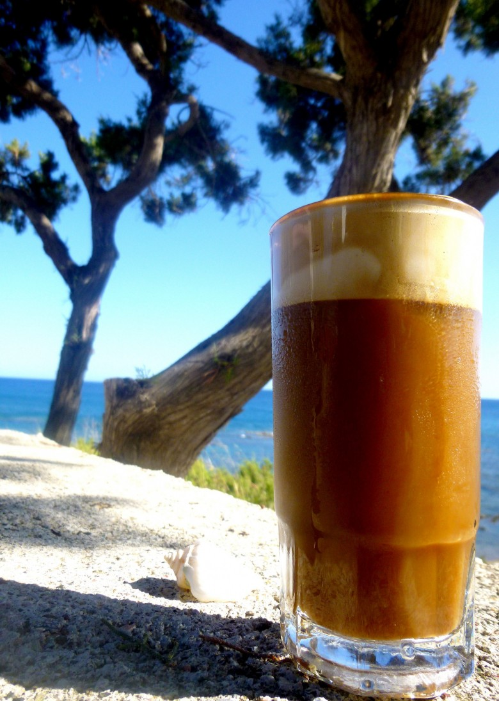
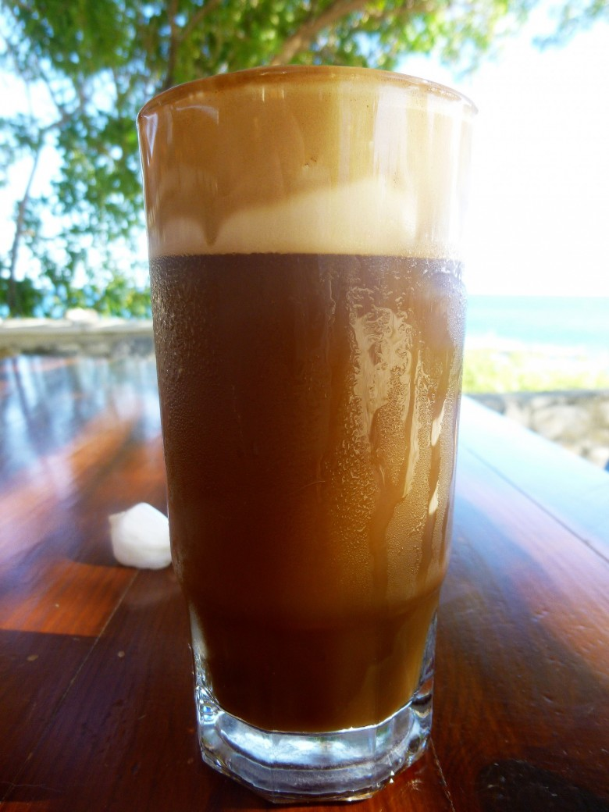
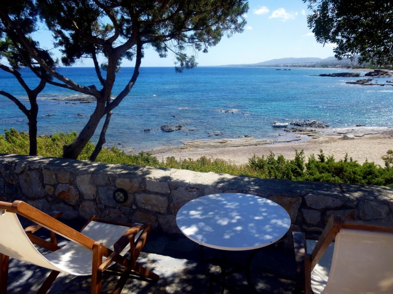

Authentique Café Frappé Grec

L’authentique café frappé Grec ou ice-coffee ou comment j’ai reussi à boire du café 🙂
C’est pour moi la grande découverte de l’été! (oui il m’en faut peu!!) En effet, je ne bois jamais de café je ne supporte pas ça mais en me promenant de village en village pendant mon voyage en Grèce je n’ai pas pu m’empêcher de goûter cette boisson marron clair que tout le monde sirote de café en café et j’ai adoré enfin surtout mon chéri!! Il ne boit plus que ça maintenant^^
En réalité il s’agit d’un café glacé rafraichissant, devenu emblématique du café grec après la seconde guerre mondiale.
En surfant de temps à autre sur le net j’ai vu que Cro ‘K’ mou organise un concours dans lequel il faut présenter une recette qui, pour nous, correspond à l’été!! J’ai eu beau chercher ( et avoir de superbes idées!! 😉 ) je me suis dit que cette boisson était sans conteste la recette idéale pour ce concours!! Je vous conseille de faire un tour sur ce blog dans lequel les recettes sont très bien mises en avant avec de magnifiques photos 🙂
Alors c’est avec les conseils précieux de Filippos (notre hôte) que je peux partager avec vous cette recette et participer au concours durant mes vacances!
Vraiment je vous conseille de tester ce café frappé (enfin pour ceux chez qui il fait chaud car j’ai cru comprendre que le temps n’était pas top en ce moment en France) qui est très agréable pour se rafraichir et il n’y a pas plus facile à réaliser!
Ici, les grecs le boivent à toutes heures de la journée, le matin, l’après-midi avant la sieste, l’après-midi après la sieste et encore tard le soir au café du coin !
Enregistrer
Ingrédients
- Café soluble - 1 ou 2 càc selon si vous l'aimez plus ou moins fort
- Sucre - 1 càc
- Glacons
- Lait
- Eau
- Glace à la vanille - facultatif
Instructions
- Dans un "shaker" ou quelque chose d'hermétique que vous pouvez secouer^^(car ici il fallu faire avec les moyens du bord!!) mettre 1 càc de café soluble (ou 2 selon vos goûts), ajouter du sucre et 1cm d'eau.
- Remuer, secouer, secouer et encore secouer (environ 1min) jusqu’à obtenir une belle mousse -> Je pense essayer à l'aide d'un mixeur en rentrant je pense que ça pourrait marcher! EDIT: Cela fonctionne très bien avec le mixeur 🙂 Attention à ne pas mettre trop d'eau, c'est la condition pour obtenir une belle mousse
- Verser la mousse dans un verre et ajouter des glaçons
- Dans le "shaker", verser de l'eau et reverser dans le verre
- Ajouter une pointe de lait pour lui donner sa couleur marron clair ( ceux qui aiment le café au lait peuvent mettre moins d'eau et ajouter plus de lait )



Les tips de la communauté
Café frappé découverte de l'été très apprécié même par ceux qui n'aiment pas le café. La mousse en surface le rend spécial. Recette simple avec astuces pratiques. Un ajustement sur le temps de préparation a été fait.
Astuces
- Café soluble recommandé pour la facilité
- Garder une bouteille d'eau au frigo pour ne pas mettre trop de glaçons
- Une minute de mixage suffit pour la mousse (3 min était excessif)
- L'eau froide aide à former une mousse parfaite
- 1cm d'eau signifie la hauteur dans le shaker au-dessus du café/sucre
Variantes suggérées
- Expresso frais au lieu de café soluble pour plus de saveur
- Ajout de glaçons selon préférence de diluition
Ajustements signalés
- Temps de mixage réduit à 1 minute au lieu de 3 pour la mousse